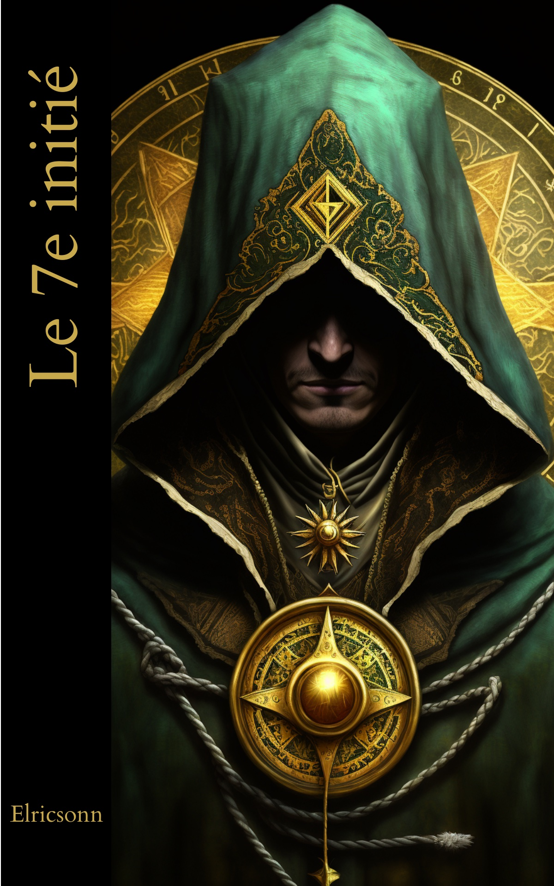

Elricsonn
— Thriller ésotérique —
En l'espace d'une nuit, leur vie basculera à tout jamais.
Lire sur AmazonAlphonse, Jean-Baptiste, Nadège, Olivier et Tania : cinq amis unis par leur passion des jeux de rôles et les plaisirs de la table que rien ne prédestinait à devenir des héros. Une course-poursuite nocturne aux conséquences fatales, un mourant confiant quelques mots énigmatiques. En l'espace d'une nuit, leur vie basculera à tout jamais.
De la Côte d'Azur à la brume mystique de Bâle, de la sérénité du Pas-de-Calais à l'effervescence surnaturelle des Georgia Guidestones, ils plongent dans une enquête périlleuse qui les dépasse totalement. Confrontés à des forces obscures, ils sont entraînés dans une quête mystique pour démêler des secrets ancestraux qui pourraient menacer l'humanité.
« Le 7e Initié » n'est pas seulement un thriller ésotérique captivant, c'est un voyage de l'esprit qui stimulera votre intellect tout en mettant à l'épreuve votre sagacité. Devenez acteur aux côtés de nos héros, partagez avec eux l'initiation à des secrets séculaires et des traditions occultes, enrichissant ainsi votre compréhension de ces mystères. Chaque page tournée est une étape vers un savoir plus profond, chaque chapitre est un pas sur le chemin de la connaissance, chaque secret dévoilé, une pièce du puzzle qui mène à la vérité ultime.
Embarquez dans une aventure qui vous tiendra en haleine jusqu'à la dernière page, qui marquera votre esprit et enrichira votre soif de savoir. Avec « Le 7e Initié », la lecture n'est pas passive : vous devenez partie intégrante de la quête, vous partagez le risque, le frisson, l'apprentissage.
Oseriez-vous suivre ces aventuriers dans leur quête de vérité ?
Pour les lecteurs de Giacometti & Ravenne et les amateurs du Da Vinci Code — complots, sociétés secrètes et vérités bien réelles du monde dans lequel nous vivons.
Chaque avis aide un nouveau lecteur à franchir le seuil. Si Le 7e initié vous a accompagné, partagez votre ressenti — quelques lignes suffisent.
Elricsonn signe avec Le 7e initié un premier roman né d'une passion pour les mystères, les traditions occultes et les grandes énigmes de l'Histoire — et de longues soirées autour d'une table de jeu de rôles entre amis.